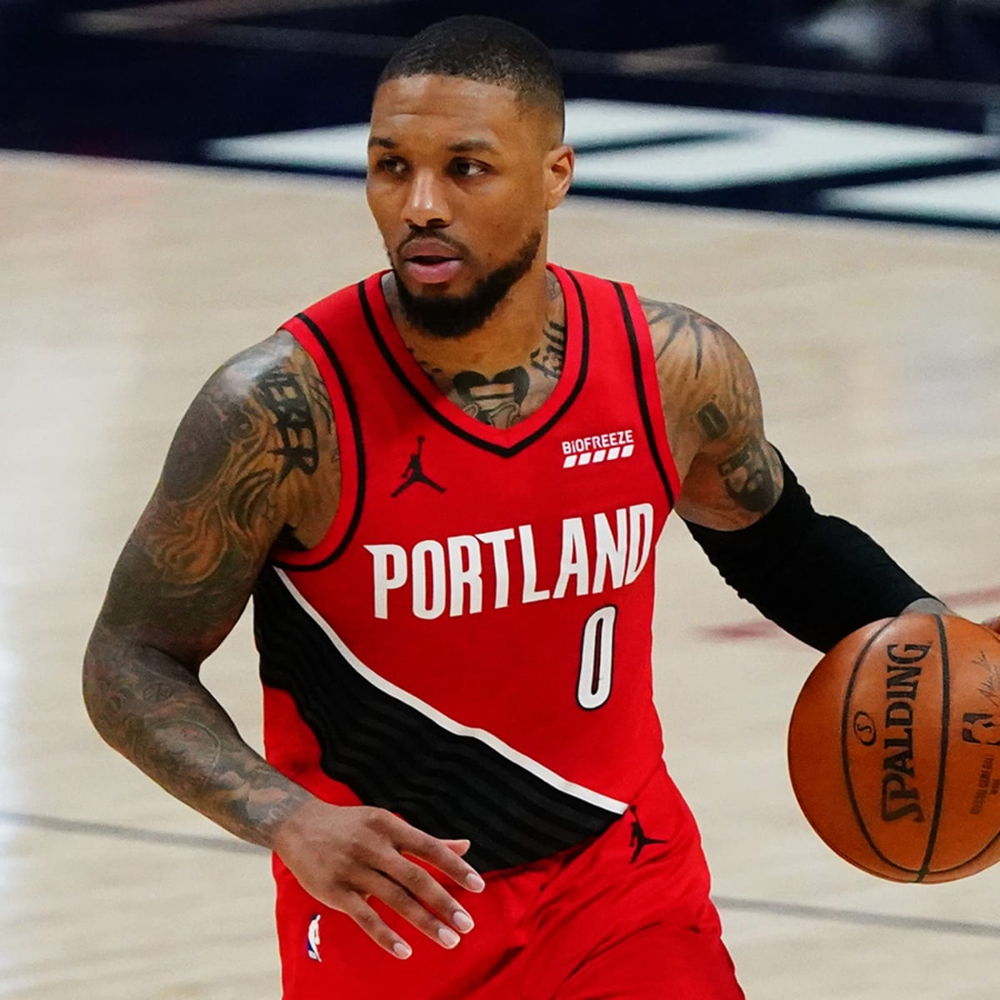

Damian Lillard
Portland Trailblazers
Damian Lamonte Ollie Lillard Sr. (born July 15, 1990) is an American professional basketball player for the Portland Trail Blazers of the National Basketball Association (NBA). He played college basketball for the Weber State Wildcats and earned third-team All-American honors in 2012. After being selected by Portland with the sixth overall pick in the 2012 NBA draft, Lillard was unanimously voted the NBA Rookie of the Year.